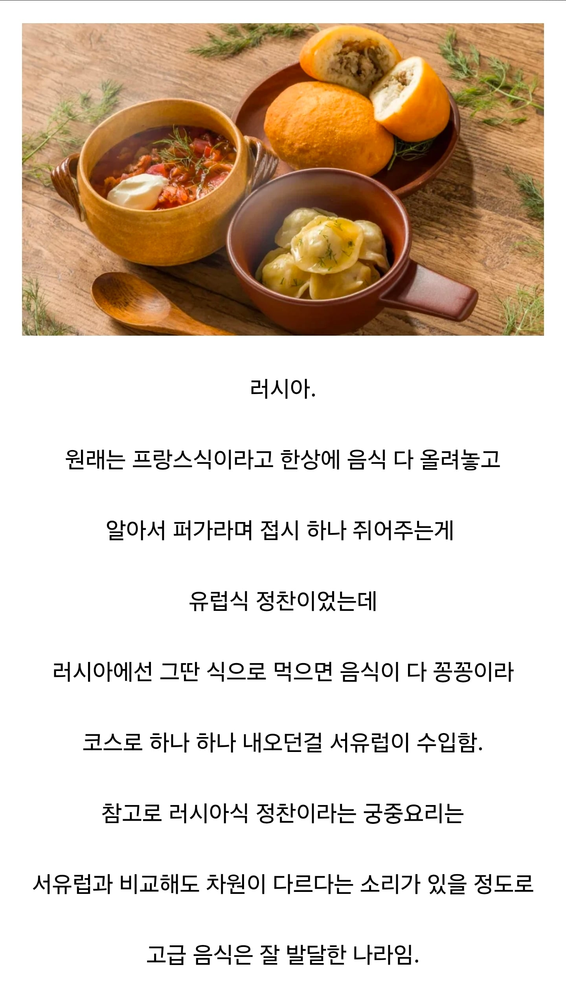

의외로 현대 서양식 코스 요리의 원조인 국가
댓글
루스키 풀코스 무 봤나? 디진다 아이가
식사예절에서 음식을 차례대로 내어오는 것 외에도, 테이블 위에 메뉴판이 있는 것, 앞접시 포크 나이프를 순서에 맞춰 바깥쪽부터 사용하는 등의 형식적인 측면은 역수입된 경우가 많지. 그리고 간단한 식사나 카페, 디저트 등을 파는 비스트로(Bistro) 라는 단어도 러시아어의 '빨리' 를 뜻하는 Быстро(븨스뜨러) 에서 유래함
동구권애들이 왠지 형식적인 절차나 전통을 지키는 면모가 좀 강한 인상이 있음 정교회도 그렇고
좆같은 환경에 살수록 규칙과 루틴을 중시하는 느낌이긴해
어른들이 하지말라는거 에베벱 싫은뒈 박고 지좆대로 행동한 새기들 다 싸늘해지는 환경일수록 더...
오 말이 되네
또 오히려 존나 풍족하고 살기 만만한 동아시아쪽은 반대 의미로 규범이 발달했겠지
엥간하면 뭐든지 할수있으니 시발 사고좀 그만치라고 ㅋㅋㅋㅋㅋ
동아시아도 원래 추운 지방이라 앞에 설명한 쪽이 좀 더 걸맞지 않을까 싶음
유럽과 다르게 중앙집권국가가 빠르게 형성되는 등 역사적인 경로도 있는거같고?
먹을게 풍족하니 먹고사니즘이 개입을 덜한다 이게 요지였음
겨울이 있고 여름이 있다지만 중동 동유럽 북유럽 이런동네처럼 극단적으로 사람죽이는 기후가 아니긴 하고
동아시아쪽도 겨울이있어서...
따지면 동남아랑 비교해야지
이탈리아 메디치 가문 며느리 받기 전까지 프랑스는 포크도 없던 나라라고 들었어
그러면 걔네 밥은 어케먹어? 숟가락 하나 가지고 해결하나?
나이프를 하나 들고 가서 썬 다음에 손으로 집어먹고 옆에 놓인 핑거볼에 손가락을 씻는다 - 반복.
이세계 전생 며느리 ㅋㅋㅋㅋ
전쟁 아니었음 러시아 한 번 놀러가보고 싶었는데
나도 러시아 한번 놀러가보고 싶음
판타지 소설에 자주 나오는 귀족 자제들이 모여서 공부하는 귀족 아카데미도 러시아에서 시행했던 제도라고 하던데
현실 로판제국임
국가는 부유하지 않은데 고급음식이 발달했으니 빨개지는것은 당연한 수순
헐 루시는 가난하다는 이미지였는데 의외다
나는 가난한데 윗대가리만 잘 사니까 빨간맛이...
블라디보스톡 무지예전 3월말에 가봤는대 여러모로 문화충격 많이 느꼈지..
뭔가 우울하고 마구잡이로 사는 것처럼 느껴짐 ㅋㅋㅋㅋㅋ
유럽 황실중에 제일 부자가 러시아 황실임 그돈을 좀 풀었으면...
뭐였찌 아포칼립스에 나혼자 FLEX였나 그소설에 러시아 코스요리, 프랑스 코스요리에 대해 자세히 나왔던 걸로 기억남.
학술발표 때문에 러시아가서 대접받은적 있는데 그냥 식탁에 음식 엄청 깔아주던데
캐-비어